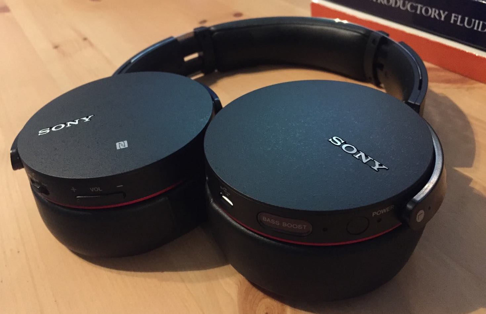

It's been a long time since I've had a pair of Bluetooth headphones. Years back I had a pair of no-name brand on-the-ear headphones, but they were pretty crappy and would drop out if I moved my head at all to the right. For years I've used Apple's EarPods when I'm out, and a pair of Audio-Technica Closed-back Headphones at work. They're not the most comfortable things, (I can't wear either of them for more than about 2 hours continuously), but they sound great for the price. That said, I've needed good headphones at home for a while, and I knew I'd be going on a trip to Japan this fall, so I'd need to eventually get some new headphones for the plane/train anyway. Eventually, I landed on the fantastically named Sony MDRXB950BT/B Extra Bass Bluetooth Headphones.
My preferred criteria for my new headphones was (in order of preference):
- Under $200
- Comfortable
- Over-the-Ear
- Bluetooth
- Noise-Cancelling
- Foldable
The Sony MDR Headphones fit most of those criteria:
- Under $200 ✓
- Comfortable ✓
- Over-the-Ear ✓
- Bluetooth ✓
- Noise-Cancelling ✗
- at least Noise Dampening ✓
- Foldable ✗
- Partially Foldable ✓
Right out of the gate I'll say that these headphones are extremely comfortable to wear, even for long durations, they look great, they pair easily with multiple devices with no random disconnects1, and the battery lasts quite a while. The Bluetooth connectivity seems stable enough and strong enough that I can reliably use the headphones with my phone in another room. Thankfully, the onboard controls are pretty simple and usable, and they don't feel cheap. Everything about these headphones from the ear cuffs, and headband, to the rotating hinges feels sturdy and well built to me.
Sadly there are a few things about the Sonys that don't feel on-par with the stuff I just mentioned. Most importantly, while they do sound decent (more than good enough for my needs) the audio quality isn't as good as I think it should be, and there's an audible hiss from them whenever they're on. It isn't really noticeable if something is playing, (even softly) but it is there, and occasionally I do pick up on it. Just for reference, I've had others listen for the hiss, and most can't hear it (maybe I just have good hearing). On the noise dampening side, the Sonys do block most ambient noise, and were enough for me on the plane, but they don't work any miracles.
Having used them for over two weeks now, including 2 10+ hour flights and multiple 3+ hour long train rides, I can say confidently that I really enjoy these headphones. The comfort alone is huge, and since I'm using them in mostly quiet settings or cafés the lack of noise cancelling doesn't usually matter. The sub-optimal bluetooth audio quality is a shame, but it's not bad. Notably these headphones have a "Bass-Boost" feature. It's not something I need or really want, especially since turning it on makes podcasts instantly unlistenable, but it does its job well.
I'm not an audiophile, but I can say that my Audio Techinicas are better sounding headphones, (and more accurate) but the Sonys are hundreds of times more comfortable, and since they're wireless, I'm fine with that tradeoff.
Filed under: